EDAD EGIPCIA
¿Dónde se encuentra ubicado?
Egipto se ubica al noroeste de África, fronterizo al continente asiático y bordeado de desiertos y mares, atravesado por el rio Nilo. Junto a la región de Mesopotamia. sus limites son:
Economía Egipcia
La base de la economía fue la agricultura al igual que en Mesopotamia, los egipcios desarrollaron un complejo sistemas de canales de irrigación y dique. asimismo, el uso del limo como fertilizante fue vital para incrementar la producción de cereales como el trigo, cebada, etc.
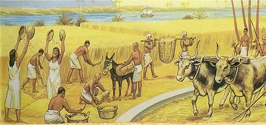Organización social y política
La sociedad egipcia era esclavista y clasista, y jerarquizada de la siguiente manera:
Religión
Los egipcios eran politeístas ya que creían en varios dioses. Su principal dios era el dios sol al cual le construían grandes templos. También creían en la vida después de la muerte por esta razón momificaban a sus muertos. Algunos de sus dioses son:
Inventos
Algunos de los inventos que encontramos de está civilización son:
El papiro es básicamente lo que conocemos hoy en día como papel, y por lo tanto uno de los inventos más importantes en la historia de la humanidad. Para fabricarlo, los egipcios utilizaban las fibras vegetales de una planta que crecía en abundancia en los alrededores de las lagunas de la región, esta planta se llama papyrus, y de allí el nombre que le dieron a su invento. Los tallos eran cortados en delgadas láminas, luego entretejidos y prensados, al secarse y terminar el proceso se obtenía la hoja, similar al papel de actual, y que utilizaban con el mismo fin
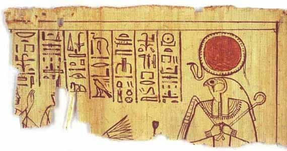
El sistema de lenguaje escrito nació en la civilización
egipcia. A pesar de las pinturas en algunas zonas de Europa,
de más allá de 30.000 años a. C, no se perfeccionó hasta el
6.000 a. C en el Antiguo Egipto y Mesopotamia, en el que se
desarrollaron pictogramas con caracteres y reglas
establecidas. Con el hallazgo de la Piedra de Rosseta se
pudo interpretar, en gran medida, el sistema de los
jeroglíficos y conocer diferentes aspectos de dicha
civilización.
Dentro de la escritura egipcia también encontramos tipos
como los:
Alrededor del año 2.700 a. C., los egipcios introdujeron el
primer sistema de numeración completamente desarrollado de
base 10. Aunque no era un sistema posicional, permitió el uso
de grandes números y también de fracciones en la forma de
fracciones unitarias: fracciones del Ojo de Horus, y varias
fracciones binarias.
Además nos aportaron algo de geometría y trigonometría: recta,
ángulo, cuadrado, plano base, altura bisectriz
Los egipcios observaron que las estrellas realizan un giro
completo en poco más de 365 días. Además, este ciclo de 365
días del Sol concuerda con el de las estaciones. El año
civil egipcio tenía 12 meses de 30 días, más 5 días llamados
epagómenos.
El calendario egipcio tenía tres estaciones de cuatro meses
cada una:
En la civilización egipcia aparece las primeras referencias al trabajo del vidrio. Según se sabe no solo lo fabricaban sino que lo moldeaban y lo coloreaban para realizar trabajos artísticos. Realizaban tallados y modelados, muchas veces estos trabajos delicados se utilizaban para decorar y los colocaban en las tumbas junto con las momias.
Fue inventado por los egipcios y lo utilizaban tanto los hombres como las mujeres. Era utilizado por un motivo estético pero también tenían la creencia de que podía curar enfermedades. El maquillaje era aplicado generalmente como un delineamiento de los ojos, y en tonos de negro. Incluso así se los representa en pinturas y esculturas. Si por algo destacaban los egipcios, era por su preocupación por la higiene y por su cuidado personal. Se cortaban el pelo y se afeitaban.
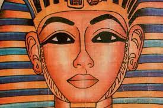Existen estudios científicos que han demostrado que los egipcios inventaron la pasta dental hace unos 5.000 años. En estos tiempos la pasta dental que utilizaban contenía materiales como ceniza, mirra, piedra pómez e incluso podía contener cascara de huevo. Todos estos ingredientes generaban una pasta corrosiva que al frotarla contra sus dientes eliminaba las impurezas. Se usaban palillos que hacían las veces de cepillo de dientes, acompañados de una mezcla de esencias de menta, mirra, canela y miel para mantener un aliento fresco.
Los egipcios estudiaban el tiempo, fueron los primeros en tener una buena referencia de tiempo de un año. Para referenciarlo crearon el calendario, y no solo uno, sino que crearon dos, el calendario civil y el calendario lunar. El calendario civil o solar, que por cierto es el más estudiado y comprendido hoy en día, consistía en 12 meses de 30 días, a los que luego sumaban 5 días que llamaban pequeño mes. La creencia era que en esos días era cuando sus dioses habían nacido
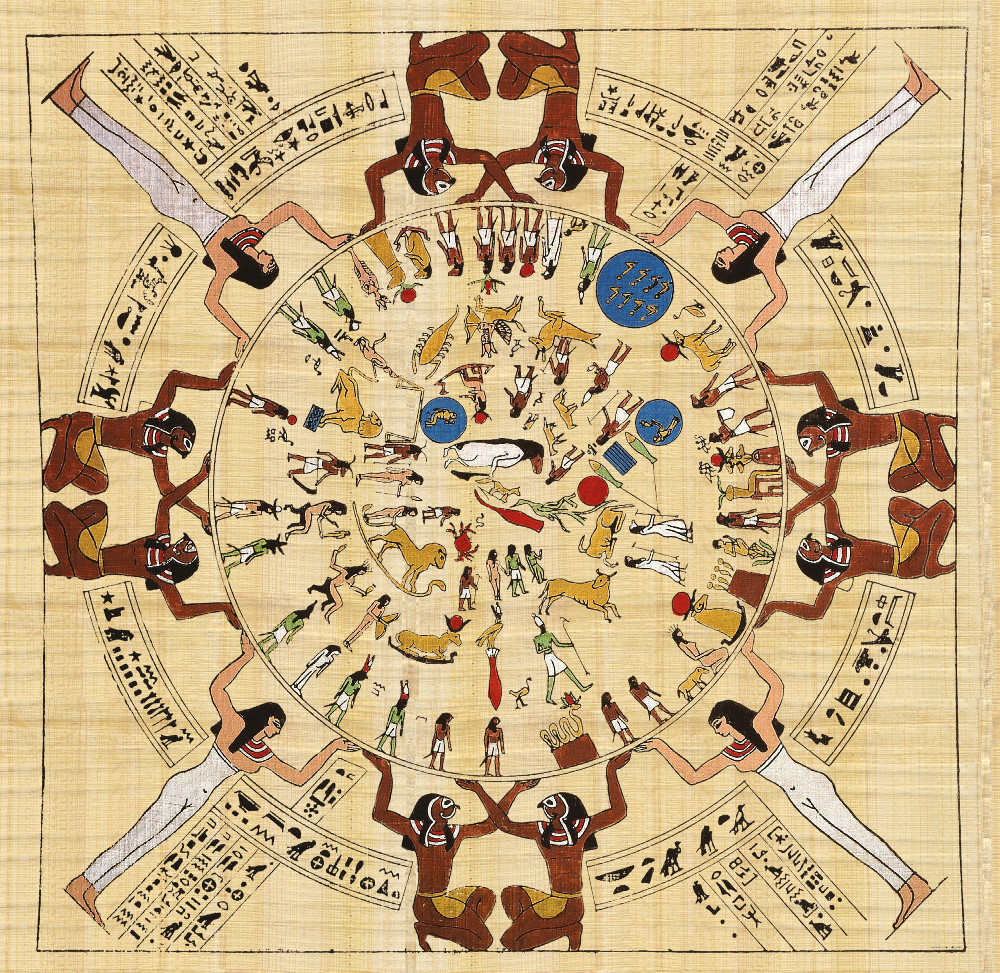Los primeros indicios de un reloj que dividiera el tiempo en 24 horas datan del Antiguo Egipto. El fin práctico del mismo eran teológicos, siendo muy vinculado a la astronomía. Estos relojes estaban divididos en diez partes iguales (cinco para el día y cinco para la noche), además de dos crepúsculos. Son conocidos los obeliscos de reloj de sol que se situaban en medio de plazas para que el pueblo pudiese saber la hora, pero los primeros prototipos eran más pequeños y prácticos. Concretamente se denominaban sechat, siendo portátiles y muy usados por las órdenes sacerdotales.
No se conoce a ciencia cierta qué civilización fue la primera en usar estos relojes de agua. De hecho, los expertos hablan de una probable atribución a la civilización egipcia o la babilónica. Pero un jeroglífico egipcio atribuye su autoría a Amenemhat que inventó un “mrḫyt” en honor al rey Amenhetep I (1514-1494 ac). Y el resto más antiguo es también egipcio, que data 1.400 a.C.: la llamada clepsidra de Karnak. Se trata de una vasija de barro cocido con relieves en su parte externa y marcas para medir el tiempo en su parte interna. Su origen tuvo lugar en los tiempos de Amenhetep III, que gobernó de 1390 a 1353 ac. Los relojes de agua o clepsidras se usaban principalmente durante la noche cuando el reloj del sol perdía su utilidad
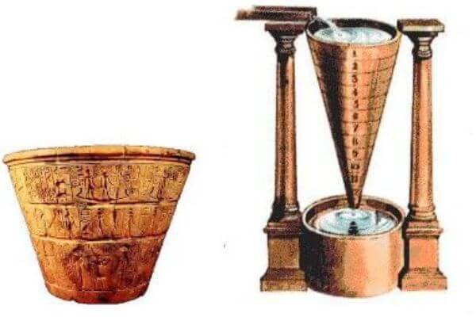Pinturas egipcias datadas del 3.000 a. C. representan a hombres con algo parecido a un condón actual, eso sí, hecho con tripas o piel de animal. El diseño básicamente es el mismo, aunque no se sabe a ciencia cierta si se usaba como método anticonceptivo, ya que más bien se interpreta como una pieza para rituales.
Estos caminos surgieron por la necesidad que tenían los egipcios de transportar grandes cantidades de bloques de piedra, desde las canteras a las pirámides y templos. Así, comenzaron a construir caminos con piezas de caliza y arenisca, que combinaban con troncos de madera petrificada. Los caminos acondicionados se comenzaron a construir con piezas de caliza y arena para tratar de facilitar el transporte de materiales, sobre todo las grandes cantidades de bloques de piedra desde las canteras.
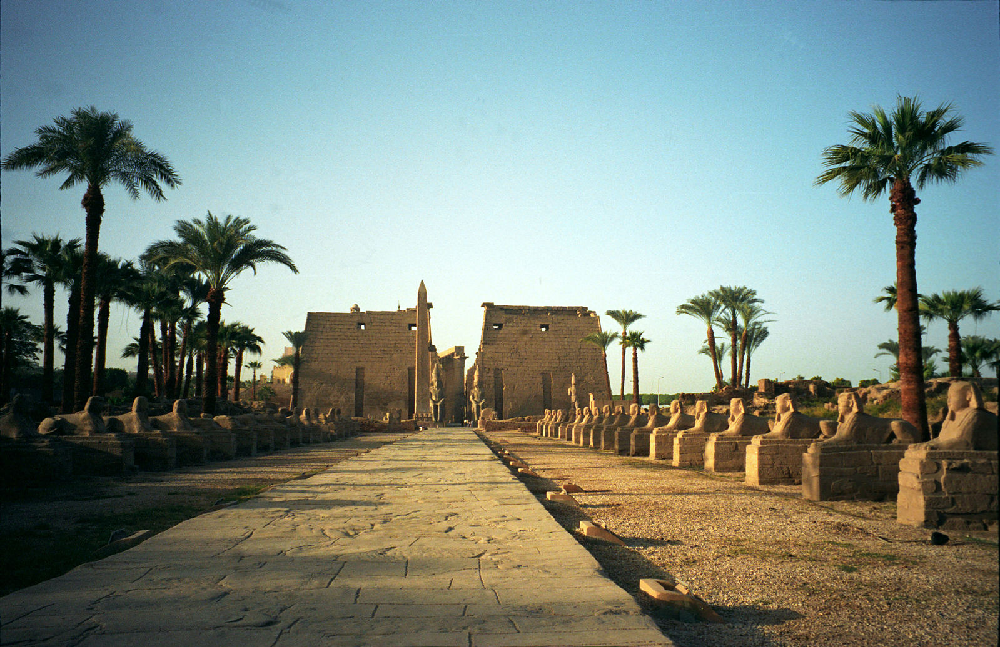
Curiosamente, las primeras prótesis fueron halladas en Egipto.
La más antigua data de la dinastía V (2.400 a.C.), y se trata
de una especie de férula para curar fracturas. Otra prótesis
encontrada ha sido la de un dedo gordo del pie, algo más
moderna, de 600 a.C. aproximadamente.
El general romano Marco Sergio (siglo III a.C.) tenía un brazo
de hierro con el que combatió a los cartagineses. Pero por
temprana que fuera la fecha no fue el primero en llevar una
prótesis. Dos momias egipcias pertenecientes a los años 950
a.C. y 600 a.C. presentaban prótesis en los pies. Dedos
gordos. Se especuló sobre si habían sido añadidos para
“completar” la momia de personas mutiladas o si eran prótesis.
Experimentos con réplicas demostraron que se podía caminar con
ellas y por tanto eran prótesis egipcias.
Los egipcios consideraban la salud y la enfermedad de una manera muy particular. Ellos creían que se trataba de una lucha entre las fuerzas del bien y del mal, en la cual era posible participar por medio de la administración de medicamentos y encantamientos que se diagnosticaban por sabios que analizaban el estado de salud de las personas.
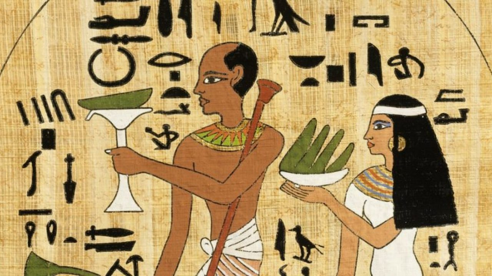La historia de la odontología existe por lo menos desde hace 5.000 años, pues se tienen evidencia de que los egipcios por el año 3.000 a. C ya realizaban extracciones dentales y trepanaban la cortical externa de la mandíbula para drenar abscesos odontológicos, trataban inflamaciones bucales y reponían las piezas dentales ausentes con diferentes sistemas. Los medios terapéuticos utilizados por los egipcios eran sencillos, múltiples y variados, sorprendentes para la sociedad actual. Hesy-Ra el primer odontólogo de la historia de la Dinastía III, cirujano dentista. Es el médico egipcio más antiguo que se conoce en la actualidad en esta especialidad de la medicina. Conocemos de su existencia gracias a un panel de madera que se conserva de su tumba, datado del año 3.000 a. C, en el Museo Egipcio del Cairo y en el que aparece como” jefe de dentistas y médicos”.
La oftalmología fue una especialidad inusualmente necesaria. El intenso sol de Egipto provocaba sequedad en los ojos, a lo que se añadía la acción abrasiva de la arena en movimiento y la proliferación de insectos en las zonas húmedas junto al Nilo. Todo conspiraba contra los ojos de los egipcios. Según el Papiro de Ebers, el tratamiento más habitual era la aplicación de pomadas en los ojos. Estas se elaboraban a partir sustancias vegetales viscosas y también minerales. Luego se aplicaban en el paciente usando una paja húmeda.
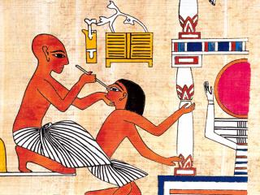La medicina egipcia fue de la primera en desarrollar instrumentos quirúrgicos para diversas funciones. Desde la eliminación de quistes, cura de fracturas, colocación de prótesis, cicatrizaciones o también técnicas de rinoplastia. El papiro de Smith determina que ya en el 3.600 a.C., la civilización egipcia hacía uso de estas herramientas para tratar a distintos enfermos. Este papiro se trataba de un manuscrito médico en el que se detallaban lesiones, diagnósticos, tratamiento y, por supuesto, los instrumentales quirúrgicos a utilizar para cada caso.
El uso de pelucas o adornos era bastante común, sobre todo entre nobles y la realeza, los cuales dedicaban una buena parte de su tiempo en el cuidado de su cabello. Esta civilización fue pionera en el depilado, así como en el afeitado de cabeza por cuestiones de salubridad y quizás comodidad en un país tan caluroso y expuesto al sol. Una manera de destacar entre tanta “cabeza rapada” era el uso de cabello falso, extensiones y las mencionadas pelucas. Las pelucas más espectaculares eran las de los nobles, los cuales se las fabricaban con pelo natural y crin. Además las perfumaban y untaban con aceites especiales para un mejor mantenimiento.
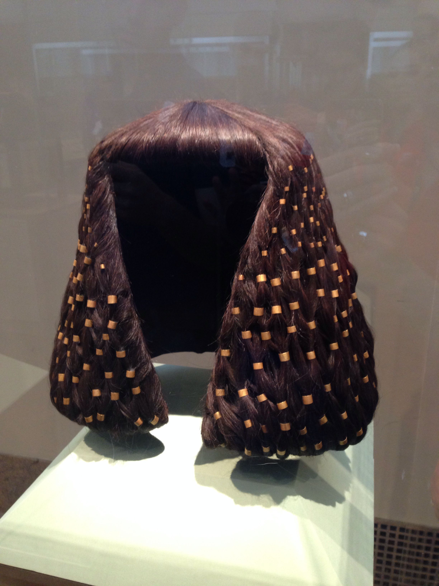Algunos de los más antiguos espejos del mundo los encontramos a orillas del Nilo y consisten en láminas de metal redondas dotadas de un mango para mayor comodidad de sus usuarios. La superficie reflectante es una lámina de cobre, que a comienzos del Reino Nuevo, cuando los egipcios comenzaron a utilizar esta aleación metálica, más resistente y flexible, pasó a ser de bronce. Al ser un instrumento utilizado sobre todo a la hora de aplicarse afeites y maquillarse, los egipcios lo relacionaron siempre con la diosa Hathor, divinidad del amor, el sexo, la música, la embriaguez. Se explica así que en muchas ocasiones el mango del espejo tenga forma de columna hathórica, es decir, de aquella cuyo capitel está formado por una imagen frontal de la diosa con peluca y orejas de vaca.
Las primeras cerraduras de la civilización egipcia datan del año 4.000 a.C. Estaban formadas por un sistema de ejes y pernos en las puertas que permitían abrir y cerrar las cerraduras con la ayuda de una llave.
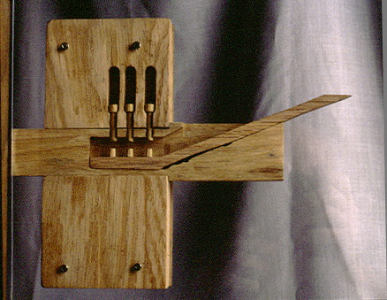Alrededor de uno 3.000 a. C los egipcios ya usaban está sencilla herramienta se componía de un hilo y de un peso atados en lo alto de un pedazo de madera. Era de gran utilidad en la construcción para saber si una pared era horizontal.
Esta herramienta estaba hecha de cobre o de bronce y se usaba para cortar madera o piedras calcáreas blandas.
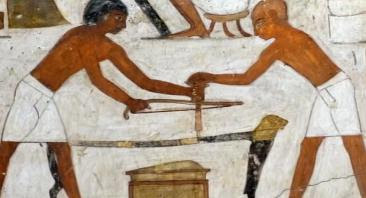Esta herramienta era usada por los egipcios para hacer agujeros en la madera o en la piedra blanda.
Era el instrumento en el que Anubis, el dios de la muerte que aparecía como un hombre con cabeza de chacal o perro salvaje, pesaba los corazones de los difuntos para determinar si las almas merecían bien el paraíso o ser devoradas por un monstruo horrible. Por otro lado también se usaba para pesar, se solían utilizar pesas de piedra o de metal.
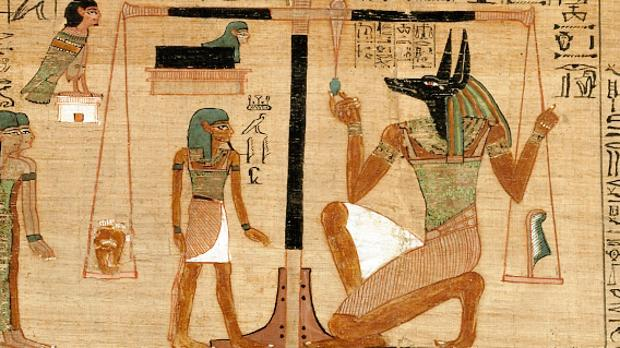Fue en Egipto donde se construyeron por primera vez barcos de madera con velas, al ser también grandes tejedores crearon cuerdas sólidas y amplias velas para usar la fuerza del viento.
La música se empleaba en varias actividades pero sobre todo en ritos entre los dioses y como remedio terapéutico. El arpa tenía seis u ocho cuerdas y estaba muy decorada.
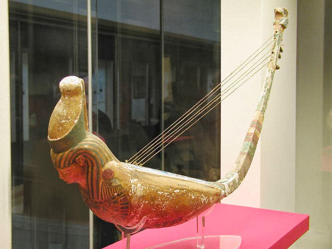Los címbalos, era un instrumento de cuerda y se toca con un par de mazos en ambas manos, golpeando las cuerdas para hacerlas sonar. Es una especie de salterio pero de mayor tamaño, aunque también los hay portátiles. Estos se empleaban sobre todo en ceremonias religiosas acompañando con las danzas rituales
Estas lámparas tenían forma de cuencos ovalados y planos de arcilla o vidrio, llenos de aceite y con una mecha que flotaba, se utilizaban para iluminar las casas señoriales. En Egipto también fabricaban las antorchas con hojas de vid o fibras vegetales impregnadas de resina.
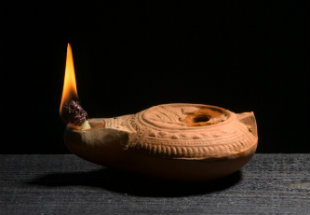El cigoñal o shaduf es una máquina simple que, usada a modo de palanca, sirve para subir agua desde un río, canal, depósito a un pozo. Esta agua se emplea para regar o para uso doméstico y de los animales, también se usaba para levantar pesos con menor esfuerzo.
Cultura
Algunos aportes culturales de esta civilización son:
La arquitectura del Antiguo Egipto se caracteriza por crear
un sistema constructivo en sus edificios monumentales, con
el empleo de sillares tallados en grandes bloques, y sólidas
columnas. En las construcciones monumentales utilizaron la
piedra (granito y mármol).
En la arquitectura religiosa construyeron templos y
obeliscos como lo son:
La escultura egipcia surge como representación de la imagen como un elemento de supervivencia. Es el medio para fijar la personalidad del dios o del difunto. La figura del faraón es la que implanta la iconografía, los modelos y las formas en que se hará el resto de la escultura. Las grandes proporciones (colosales) carecen de expresividad (rigidez) destacan:
La momificación consistía en conservar un cuerpo después que la persona fallece, para eso le san los intestinos y los sesos, y luego cubren el cuerpo con vendas engomadas.